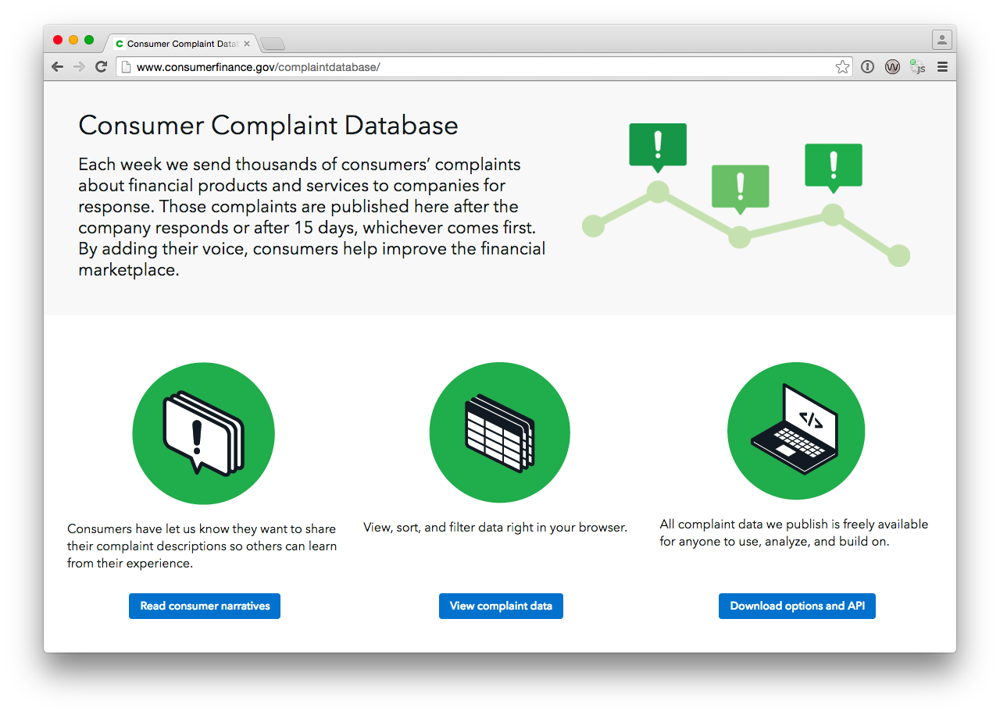

Getting Started
In this tutorial, we'll begin exploring the CFPB dataset using a fantastic data visualization tool developed by Density Design. Called RAW, the data visualization tool allows you to simply cut and paste CSV data into a window, select the data visualization you'd like to design, and through simple drag-and-drop functionality develop the visualization further using variables of your choice.
RAW is particularly useful because it not only is a great introduction to many data visualizations we see more frequently in the news and elsewhere, but because it also provides you with embeddable code. Working with the code yourself is a fantastic and easy way to better understand how data visualization libraries work (in this case D3) - you can practice modifying the raw code yourself and always return to the visualization to see how changes impact the final design.
When you have time, you can see RAW in action here:
Step One: Getting the Data
Now that we know what tool we're going to use for this tutorial, let's go to the CFPB website and get some data! Open your web browser, and go to http://www.consumerfinance.gov/complaintdatabase/. Scroll down the page until you see the button that reads "Download Options and API".

Important Note: The CFPB website already provides some pretty great data visualization tools through the Socrata application. If you wanted to, you could stop here and simply click the "View Complaint Data" button to begin exploring the data. Since we want to not only demonstrate the richness and flexibility of the data on the site but also ways that you can visualize the information outside of the embedded tools, we're going to continue manually downloading the data and visualizing it elsewhere.
Click on the Download Options and API" button. In the next section you'll be presented with an option to download the actual, raw data itself.

About the Workshop
On the heels of the fantastic open data release by the Consumer Financial Protection Bureau (see http://www.consumerfinance.gov/complaintdatabase/), this workshop will provide those relatively new to data visualization tools with an opportunity to:
1. Learn about the CFPB data, and why the release is so important;
2. Learn a few basic data visualization types, uses, and broader exposure to data visualization taxonomies;
3. Learn some common do's and dont's when it comes to data visualization;
4. Explore a few free on-line data visualization tools using subsets of the CFPB data;
5. Have a hands-on opportunity to create and share your own data visualizations through an exploratory process.
Course Materials
Reminder: to participate in any of the tutorials, you'll need to bring your own laptop (and we'll bring the WiFi!)
Text used for reference (free ebook): "Interactive Data Visualization for the Web", by Scott Murray
Tutorial (Beginner):
Tutorial (Advanced): Dygraphs time series example using CFPB Consumer Complaints Data
Agenda
AGENDA:
1:00 - 1:15 PM Very brief discussion on CFPB data, what's in there, and other background information. Sharing a few cleaned and simplified datasets for the day.
1:15 - 1:30 PM 101: Basic Intro to Data Viz.
1:30 - 2:00 PM Short tutorials to a few super-awesome (and free) data visualization tools, walk-thru using CFPB data samples.
2:00 - 2:45 PM Group is cut loose to try building their own data visualizations.
2:45 - 3:00 PM Show and Tell, wrap-up discussion.